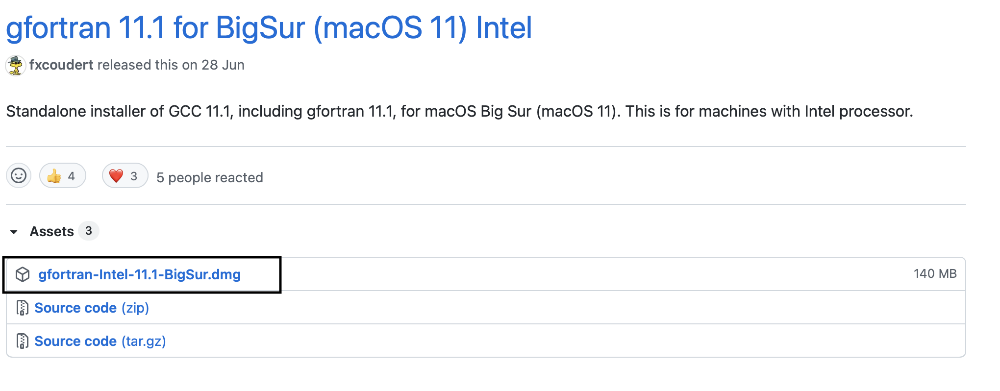
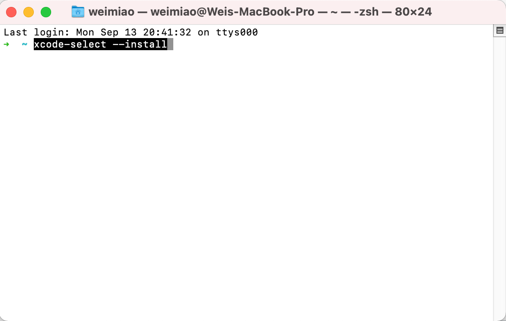
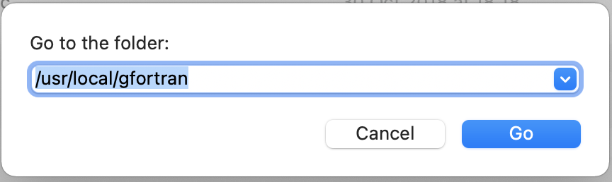
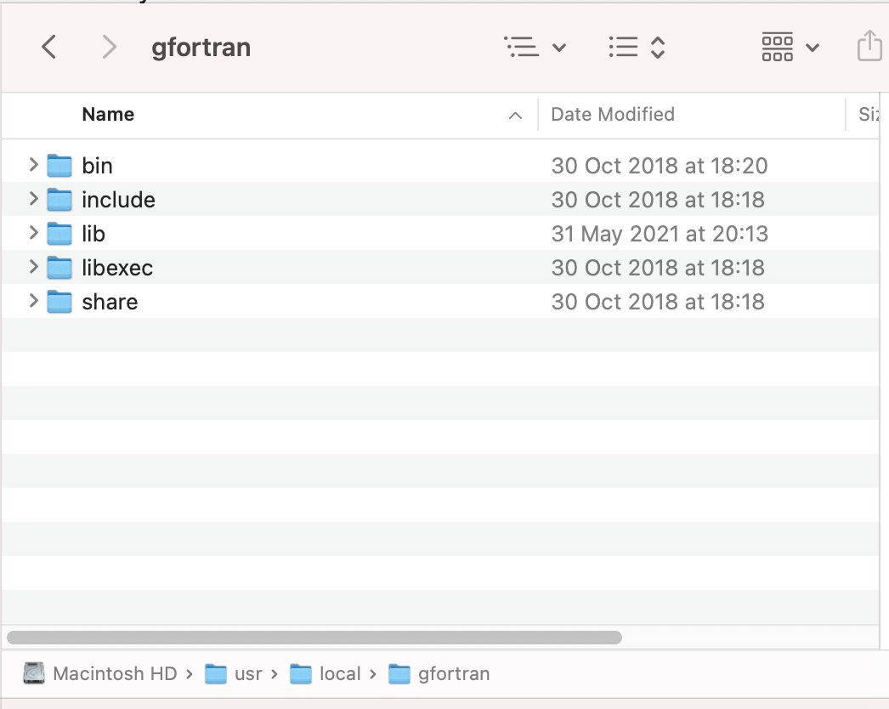
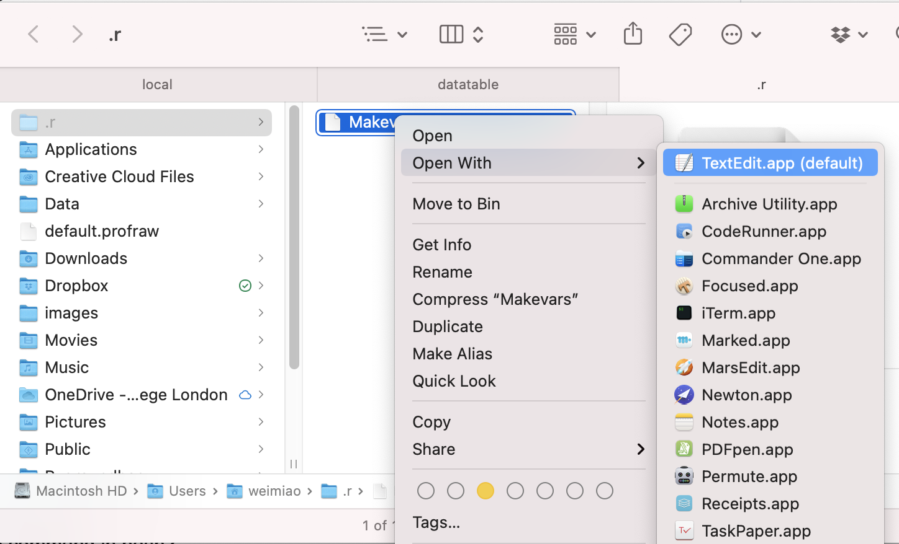
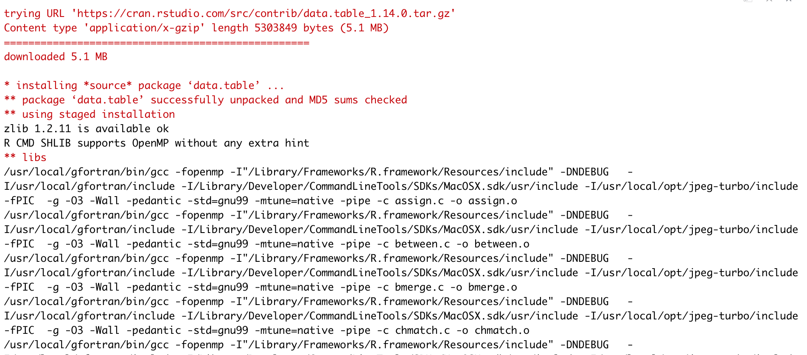

4 Lecture Notes
The lecture notes and reading materials will be released on the course’s Moodle page (not online here due to copyright issues) a few days before each class. Please do check the Moodle page one day before the class.
4.1 data.table Package
This is a tutorial on the data.table package, which we will learn in Week 2.
4.1.1 Installation of data.table
You can use pacman::p_load(data.table) command on both Windows and MacOS to install and load the data.table package. You can use all the funtionality of data.table package without issues.
However, if you manually load the package using
library(data.table)You may find that, there is a warning message, saying that “This installation of data.table has not detected OpenMP support. It should still work but in single-threaded mode.”
It means that using the default installation method, data.table package can only utilize a single core of your computer, even if your CPU may have 4 cores or more. We know that one of the biggest advantages of data.table over dplyr or pandas is its efficiency and great performance. So we do not want to lose this advantage on MacOS.
The data.table official github page offers a more comprehensive guide on how to install data.table, but it contains lots of information and you may get lost easily. Below, I will show you an easier step-by-step guide on how to install data.table to enable its OpenMP capability on Mac. If you failed the installation with my guide, please refer back to the official guide to troubleshoot.
(p.s. I do not own the latest M1 Mac, and the tutorial below applies to Intel-based Macbooks.)
4.1.1.1 Step 1: Install a clang compiler that supports OpenMP
Simply put, in recent MacOS releases, the default clang (c-language) compiler disables support for OpenMP. That’s why with the default installation, we do not have OpenMP. The solution is to use a C complier that supports OpenMP.
In this guide, we will be using the gfortran complier.
- Go to this page https://github.com/fxcoudert/gfortran-for-macOS/releases, and download the
.dmgfile that suits your MacOS. For instance, I am using BigSur and a Intel-based Macbook, so I will download and install gfortran-intel-11.1-BigSur.dmg.

After downloading the dmg file, install it accordingly.
Ensure that you have command line tools installed. Do NOT skip this step. It is essential. To do so, open Mac’s
Terminal, which is a Mac built-in app as below:
- Type (or copy paste) the following into your terminal and hit enter to run:
xcode-select --installlike this:

If you get an error message: xcode-select: error: command line tools are already installed, use “Software Update” to install updates, then you already have command line tools and can proceed to the next step. Else please follow the onscreen instructions and install it first.
4.1.1.2 Step 2: Take the gfortran path
After installing gfortran, open
Finder.Press
shift+command+G; Paste “/usr/local/gfortran” intoFinderas in the screenshot, and hitEnter

- You should see this now:

If you see the “gfortran” folder, with subfolders named “bin”, “include”, etc., it means you have successfully found out the path of your gfortran installation. Otherwise, you may need to figure out the correct path.
4.1.1.3 Step 3: Create and edit “Makevars”
Open
Terminal.Run the following code in
Terminalto change the current directory to “~/.r”
cd ~/.r- Run the following code in
Terminalto create a new file named Makevar in folder “~/.r”
touch Makevars- Now go to
Finder, pressShift+Command+G; Paste “~/.r/Makevars” and go to the folder; Open the “Makevars” file with TextEdit app, as in the screenshot.

- Copy paste the following text into “Makevars” file.
LOC = /usr/local/gfortran
CC=$(LOC)/bin/gcc -fopenmp
CXX=$(LOC)/bin/g++ -fopenmp
CXX11 = $(LOC)/bin/g++ -fopenmp # for fst package
CXX14=$(LOC)/bin/g++ -fopenmp
CXX17=$(LOC)/bin/g++ -fopenmp
CXX1X=$(LOC)/bin/g++ -fopenmp
CFLAGS=-g -O3 -Wall -pedantic -std=gnu99 -mtune=native -pipe
CXXFLAGS=-g -O3 -Wall -pedantic -std=c++11 -mtune=native -pipe -Wno-unused
LDFLAGS=-L$(LOC)/lib -Wl,-rpath,$(LOC)/lib
CPPFLAGS=-I$(LOC)/include -I/Library/Developer/CommandLineTools/SDKs/MacOSX.sdk/usr/include - Save the file and exit
4.1.1.4 Step 4: Install data.table again from source.
Now open Rstudio and install data.table package using this command:
install.packages('data.table', type = 'source')If you see the following rolling compilation process, then congratulations, after a while, you should be able to use data.table package with OpenMP support!
